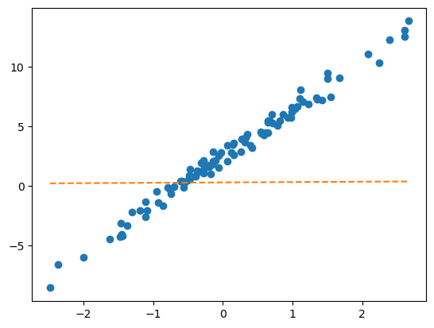
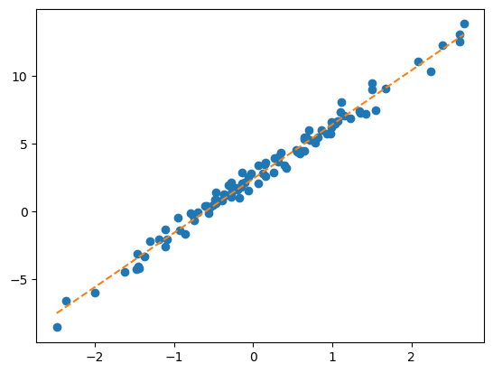

import torch
import pandas as pd
import matplotlib.pyplot as pltDeep Learning 7
1. Imports
2. torch.nn.Embedding
A. 임베딩 레이어
`-` motive : torch.nn.functional.one_hot + torch.nn.Linear를 매번 쓰는 건 너무 귀찮은데??torch.manual_seed(43052)
#x = ['옥순','영숙','하니','옥순','영숙']
x = torch.tensor([0,1,2,0,1])
E = torch.nn.functional.one_hot(x).float()
linr = torch.nn.Linear(3,1,bias=False)
lf = linr(E)
lftensor([[-0.2002],
[-0.4890],
[ 0.2081],
[-0.2002],
[-0.4890]], grad_fn=<MmBackward0>)linr.weightParameter containing:
tensor([[-0.2002, -0.4890, 0.2081]], requires_grad=True)torch.concat([linr(E) , E @ linr.weight.T],axis=1)tensor([[-0.2002, -0.2002],
[-0.4890, -0.4890],
[ 0.2081, 0.2081],
[-0.2002, -0.2002],
[-0.4890, -0.4890]], grad_fn=<CatBackward0>)- torch.nn.functional.one_hot + torch.nn.Linear를 함께 처리해주는 레이어 torch.nn.Embedding 존재
torch.manual_seed(43052)
ebdd = torch.nn.Embedding(3,1)
ebdd.weight.data = linr.weight.data.T
ebdd(x)tensor([[-0.2002],
[-0.4890],
[ 0.2081],
[-0.2002],
[-0.4890]], grad_fn=<EmbeddingBackward0>)? 굳이 one_hot인코딩을 해야하나? 안하고 바로 linear하면 안되나?
- linear.weight가 각각의 데이터에 개별마다 서로 다른 weight가 적용되어야하는데 one_hot인코딩을 하지 않으면 개별적으로 적용되지 않음.
B. MF-based 추천시스템 재설계
df_view = pd.read_csv('https://raw.githubusercontent.com/guebin/DL2024/main/posts/solo.csv',index_col=0)
df_view| 영식(IN) | 영철(IN) | 영호(IS) | 광수(IS) | 상철(EN) | 영수(EN) | 규빈(ES) | 다호(ES) | |
|---|---|---|---|---|---|---|---|---|
| 옥순(IN) | NaN | 4.02 | 3.45 | 3.42 | 0.84 | 1.12 | 0.43 | 0.49 |
| 영자(IN) | 3.93 | 3.99 | 3.63 | 3.43 | 0.98 | 0.96 | 0.52 | NaN |
| 정숙(IS) | 3.52 | 3.42 | 4.05 | 4.06 | 0.39 | NaN | 0.93 | 0.99 |
| 영숙(IS) | 3.43 | 3.57 | NaN | 3.95 | 0.56 | 0.52 | 0.89 | 0.89 |
| 순자(EN) | 1.12 | NaN | 0.59 | 0.43 | 4.01 | 4.16 | 3.52 | 3.38 |
| 현숙(EN) | 0.94 | 1.05 | 0.32 | 0.45 | 4.02 | 3.78 | NaN | 3.54 |
| 서연(ES) | 0.51 | 0.56 | 0.88 | 0.89 | 3.50 | 3.64 | 4.04 | 4.10 |
| 보람(ES) | 0.48 | 0.51 | 1.03 | NaN | 3.52 | 4.00 | 3.82 | NaN |
| 하니(I) | 4.85 | 4.82 | NaN | 4.98 | 4.53 | 4.39 | 4.45 | 4.52 |
df_train = df_view.stack().reset_index().set_axis(['W','M','y'],axis=1)
w = {'옥순(IN)':0, '영자(IN)':1, '정숙(IS)':2, '영숙(IS)':3, '순자(EN)':4, '현숙(EN)':5, '서연(ES)':6, '보람(ES)':7, '하니(I)':8}
m = {'영식(IN)':0, '영철(IN)':1, '영호(IS)':2, '광수(IS)':3, '상철(EN)':4, '영수(EN)':5, '규빈(ES)':6, '다호(ES)':7}
X1 = torch.tensor(df_train['W'].map(w)) # length-n int vector
X2 = torch.tensor(df_train['M'].map(m)) # length-n int vector
y = torch.tensor(df_train['y']).float().reshape(-1,1) # (n,1) float vector임베딩레이어를 활용하여 MF-based 추천시스템을 설계하라.
torch.manual_seed(43052)
ebdd1 = torch.nn.Embedding(9,2)
b1 = torch.nn.Embedding(9,1)
ebdd2 = torch.nn.Embedding(8,2)
b2 = torch.nn.Embedding(8,1)
sig = torch.nn.Sigmoid()
loss_fn = torch.nn.MSELoss()
params = list(ebdd1.parameters()) + list(b1.parameters()) + list(ebdd2.parameters()) + list(b2.parameters())
optimizr = torch.optim.Adam(params , lr=0.1)
#--#
for epoc in range(100):
# 1
W_features = ebdd1(X1)
W_bias = b1(X1)
M_features = ebdd2(X2)
M_bias = b2(X2)
score = (W_features * M_features).sum(axis=1).reshape(-1,1) + W_bias + M_bias
yhat = sig(score) * 5
# 2
loss = loss_fn(yhat,y)
# 3
loss.backward()
# 4
optimizr.step()
optimizr.zero_grad()torch.concat([yhat,y],axis=1)[::4]tensor([[4.1083, 4.0200],
[0.9388, 1.1200],
[4.0483, 3.9900],
[0.9707, 0.9600],
[4.2264, 4.0500],
[0.9518, 0.9900],
[0.5124, 0.5600],
[1.1198, 1.1200],
[4.0588, 4.1600],
[1.0596, 1.0500],
[3.9666, 3.7800],
[0.9472, 0.8800],
[3.9194, 4.0400],
[1.0346, 1.0300],
[4.8851, 4.8500],
[4.5387, 4.3900]], grad_fn=<SliceBackward0>)- Nan값들을 추출하고 싶다면? 아래와 같이 진행
w = {'옥순(IN)':0, '영자(IN)':1, '정숙(IS)':2, '영숙(IS)':3, '순자(EN)':4, '현숙(EN)':5, '서연(ES)':6, '보람(ES)':7, '하니(I)':8}
m = {'영식(IN)':0, '영철(IN)':1, '영호(IS)':2, '광수(IS)':3, '상철(EN)':4, '영수(EN)':5, '규빈(ES)':6, '다호(ES)':7}
df_test = pd.DataFrame({'W':['옥순(IN)','보람(ES)','하니(I)'],'M':['영식(IN)','다호(ES)','영호(IS)']})
XX1 = torch.tensor(df_test['W'].map(w))
XX2 = torch.tensor(df_test['M'].map(m))
ebdd1 = torch.nn.Embedding(9,2)
b1 = torch.nn.Embedding(9,1)
ebdd2 = torch.nn.Embedding(8,2)
b2 = torch.nn.Embedding(8,1)
W_features = ebdd1(XX1)
W_bias = b1(XX1)
M_features = ebdd2(XX2)
M_bias = b2(XX2)
score = (W_features * M_features).sum(axis=1).reshape(-1,1) + W_bias + M_bias
yhat = sig(score) * 5
yhattensor([[1.8270],
[2.6058],
[4.5784]], grad_fn=<MulBackward0>)3. 사용자 정의 네트워크
A. 사용자 정의 네트워크 사용법
- 예비학습1 : net(x)와 net.forward(x)는 사실 같다.
net = torch.nn.Sequential(
torch.nn.Linear(1,1),
torch.nn.Sigmoid()
)X = torch.randn(5,1)
Xtensor([[-1.2804],
[-0.0382],
[-0.8600],
[-1.3291],
[ 0.0696]])net(X)tensor([[0.1890],
[0.3183],
[0.2277],
[0.1849],
[0.3315]], grad_fn=<SigmoidBackward0>)net.forward(X)tensor([[0.1890],
[0.3183],
[0.2277],
[0.1849],
[0.3315]], grad_fn=<SigmoidBackward0>)net.forward = lambda x : '메롱'net.forward(X)'메롱'net(X)'메롱'- 예비학습2 : torch.nn.Module을 상속받아서 네트워크를 만들면 (= class XXX(torch.nn.Module): 과 같은 방식으로 클래스를 선언하면) 약속된 아키텍처를 가진 네트워크를 찍어내는 함수를 만들 수 있다.
예시1)
class Mynet1(torch.nn.Module):
def __init__(self):
super().__init__()
self.l1 = torch.nn.Linear(1,1)
self.a1 = torch.nn.Sigmoid()
self.l2 = torch.nn.Linear(1,1)
def forward(self,x):
yhat = self.l2(self.al(self.l1(x)))
return yhatnet을 내가 만든 네트워크로 받아주기
net = Mynet1()예시2)
class Mynet2(torch.nn.Module):
def __init__(self):
super().__init__()
self.l1 = torch.nn.Linear(in_features=1,out_features=1,bias=True)
self.a1 = torch.nn.ReLU()
self.l2 = torch.nn.Linear(in_features=1,out_features=1,bias=False)
def forward(self,x):
yhat = self.l2(self.a1(self.l1(x)))
return yhatnet = Mynet2()실습)
torch.manual_seed(43052)
x,_ = torch.randn(100).sort()
x = x.reshape(-1,1)
ϵ = torch.randn(100).reshape(-1,1)*0.5
y = 2.5+ 4*x + ϵplt.plot(x,y,'o')
class Net(torch.nn.Module):
def __init__(self):
super().__init__()
self.l1 = torch.nn.Linear(1,1)
def forward(self,x):
yhat = self.l1(x)
return yhatplt.plot(x,y,'o')
plt.plot(x,net(x).data,'--') # 최초의 직선
net = Net()
loss_fn = torch.nn.MSELoss()
optimizr = torch.optim.Adam(net.parameters(),lr=0.1)
for epoc in range(100):
yhat = net(x)
loss = loss_fn(yhat,y)
loss.backward()
optimizr.step()
optimizr.zero_grad()plt.plot(x,y,'o')
plt.plot(x,net(x).data,'--') # 최초의 직선
B. MF-based 추천시스템 재설계
df_view = pd.read_csv('https://raw.githubusercontent.com/guebin/DL2024/main/posts/solo.csv',index_col=0)
df_view| 영식(IN) | 영철(IN) | 영호(IS) | 광수(IS) | 상철(EN) | 영수(EN) | 규빈(ES) | 다호(ES) | |
|---|---|---|---|---|---|---|---|---|
| 옥순(IN) | NaN | 4.02 | 3.45 | 3.42 | 0.84 | 1.12 | 0.43 | 0.49 |
| 영자(IN) | 3.93 | 3.99 | 3.63 | 3.43 | 0.98 | 0.96 | 0.52 | NaN |
| 정숙(IS) | 3.52 | 3.42 | 4.05 | 4.06 | 0.39 | NaN | 0.93 | 0.99 |
| 영숙(IS) | 3.43 | 3.57 | NaN | 3.95 | 0.56 | 0.52 | 0.89 | 0.89 |
| 순자(EN) | 1.12 | NaN | 0.59 | 0.43 | 4.01 | 4.16 | 3.52 | 3.38 |
| 현숙(EN) | 0.94 | 1.05 | 0.32 | 0.45 | 4.02 | 3.78 | NaN | 3.54 |
| 서연(ES) | 0.51 | 0.56 | 0.88 | 0.89 | 3.50 | 3.64 | 4.04 | 4.10 |
| 보람(ES) | 0.48 | 0.51 | 1.03 | NaN | 3.52 | 4.00 | 3.82 | NaN |
| 하니(I) | 4.85 | 4.82 | NaN | 4.98 | 4.53 | 4.39 | 4.45 | 4.52 |
df_train = df_view.stack().reset_index().set_axis(['W','M','y'],axis=1)
w = {'옥순(IN)':0, '영자(IN)':1, '정숙(IS)':2, '영숙(IS)':3, '순자(EN)':4, '현숙(EN)':5, '서연(ES)':6, '보람(ES)':7, '하니(I)':8}
m = {'영식(IN)':0, '영철(IN)':1, '영호(IS)':2, '광수(IS)':3, '상철(EN)':4, '영수(EN)':5, '규빈(ES)':6, '다호(ES)':7}
X1 = torch.tensor(df_train['W'].map(w)) # length-n int vector
X2 = torch.tensor(df_train['M'].map(m)) # length-n int vector
y = torch.tensor(df_train['y']).float().reshape(-1,1) # (n,1) float vector사용자 정의 네트워크를 이용하여 MF-based 추천시스템을 설계하라
- 풀이1
class Net(torch.nn.Module):
def __init__(self):
super().__init__()
self.ebdd1 = torch.nn.Embedding(9,2)
self.ebdd2 = torch.nn.Embedding(8,2)
self.b1 = torch.nn.Embedding(9,1)
self.b2 = torch.nn.Embedding(8,1)
self.sig = torch.nn.Sigmoid()
def forward(self,X1,X2):
W_features = self.ebdd1(X1)
M_features = self.ebdd2(X2)
W_bias = self.b1(X1)
M_bias = self.b2(X2)
score = (W_features * M_features).sum(axis=1).reshape(-1,1) + W_bias + M_bias
yhat = sig(score) * 5
return yhatnet = Net()
loss_fn = torch.nn.MSELoss()
optimizr = torch.optim.Adam(net.parameters(),lr=0.1)
for epoc in range(100):
yhat = net(X1,X2)
loss = loss_fn(yhat,y)
loss.backward()
optimizr.step()
optimizr.zero_grad()torch.concat([yhat.data , y],axis=1)[::5]tensor([[4.0761, 4.0200],
[0.5779, 0.4300],
[3.5008, 3.4300],
[3.4501, 3.4200],
[0.9958, 0.9900],
[0.7196, 0.5200],
[0.4822, 0.4300],
[0.8808, 0.9400],
[3.9193, 3.7800],
[0.8878, 0.8900],
[0.5020, 0.4800],
[4.0130, 3.8200],
[4.7589, 4.3900]])- 풀이2
X = torch.stack([X1,X2],axis=1)
X[:5]tensor([[0, 1],
[0, 2],
[0, 3],
[0, 4],
[0, 5]])X[:,0], X[:,1](tensor([0, 0, 0, 0, 0, 0, 0, 1, 1, 1, 1, 1, 1, 1, 2, 2, 2, 2, 2, 2, 2, 3, 3, 3,
3, 3, 3, 3, 4, 4, 4, 4, 4, 4, 4, 5, 5, 5, 5, 5, 5, 5, 6, 6, 6, 6, 6, 6,
6, 6, 7, 7, 7, 7, 7, 7, 8, 8, 8, 8, 8, 8, 8]),
tensor([1, 2, 3, 4, 5, 6, 7, 0, 1, 2, 3, 4, 5, 6, 0, 1, 2, 3, 4, 6, 7, 0, 1, 3,
4, 5, 6, 7, 0, 2, 3, 4, 5, 6, 7, 0, 1, 2, 3, 4, 5, 7, 0, 1, 2, 3, 4, 5,
6, 7, 0, 1, 2, 4, 5, 6, 0, 1, 3, 4, 5, 6, 7]))class Net(torch.nn.Module):
def __init__(self):
super().__init__()
self.ebdd1 = torch.nn.Embedding(9,2)
self.ebdd2 = torch.nn.Embedding(8,2)
self.b1 = torch.nn.Embedding(9,1)
self.b2 = torch.nn.Embedding(8,1)
self.sig = torch.nn.Sigmoid()
def forward(self,X):
X1,X2 = X[:,0],X[:,1]
W_features = self.ebdd1(X1)
M_features = self.ebdd2(X2)
W_bias = self.b1(X1)
M_bias = self.b2(X2)
score = (W_features * M_features).sum(axis=1).reshape(-1,1) + W_bias + M_bias
yhat = sig(score) * 5
return yhatnet = Net()
loss_fn = torch.nn.MSELoss()
optimizr = torch.optim.Adam(net.parameters(),lr=0.1) # 이게 편해요!!
#--#
for epoc in range(100):
# 1
yhat = net(X)
# 2
loss = loss_fn(yhat,y)
# 3
loss.backward()
# 4
optimizr.step()
optimizr.zero_grad()torch.concat([yhat.data,y],axis=1)[::5]tensor([[4.0690, 4.0200],
[0.6189, 0.4300],
[3.5540, 3.4300],
[3.4387, 3.4200],
[0.9671, 0.9900],
[0.6642, 0.5200],
[0.5653, 0.4300],
[0.0233, 0.9400],
[3.8030, 3.7800],
[0.7846, 0.8900],
[0.5607, 0.4800],
[3.8352, 3.8200],
[4.9609, 4.3900]])4.NN-based 추천시스템
A. NN-based 방식
df_view = pd.read_csv('https://raw.githubusercontent.com/guebin/DL2024/main/posts/solo.csv',index_col=0)
df_view| 영식(IN) | 영철(IN) | 영호(IS) | 광수(IS) | 상철(EN) | 영수(EN) | 규빈(ES) | 다호(ES) | |
|---|---|---|---|---|---|---|---|---|
| 옥순(IN) | NaN | 4.02 | 3.45 | 3.42 | 0.84 | 1.12 | 0.43 | 0.49 |
| 영자(IN) | 3.93 | 3.99 | 3.63 | 3.43 | 0.98 | 0.96 | 0.52 | NaN |
| 정숙(IS) | 3.52 | 3.42 | 4.05 | 4.06 | 0.39 | NaN | 0.93 | 0.99 |
| 영숙(IS) | 3.43 | 3.57 | NaN | 3.95 | 0.56 | 0.52 | 0.89 | 0.89 |
| 순자(EN) | 1.12 | NaN | 0.59 | 0.43 | 4.01 | 4.16 | 3.52 | 3.38 |
| 현숙(EN) | 0.94 | 1.05 | 0.32 | 0.45 | 4.02 | 3.78 | NaN | 3.54 |
| 서연(ES) | 0.51 | 0.56 | 0.88 | 0.89 | 3.50 | 3.64 | 4.04 | 4.10 |
| 보람(ES) | 0.48 | 0.51 | 1.03 | NaN | 3.52 | 4.00 | 3.82 | NaN |
| 하니(I) | 4.85 | 4.82 | NaN | 4.98 | 4.53 | 4.39 | 4.45 | 4.52 |
df_train = df_view.stack().reset_index().set_axis(['W','M','y'],axis=1)
w = {'옥순(IN)':0, '영자(IN)':1, '정숙(IS)':2, '영숙(IS)':3, '순자(EN)':4, '현숙(EN)':5, '서연(ES)':6, '보람(ES)':7, '하니(I)':8}
m = {'영식(IN)':0, '영철(IN)':1, '영호(IS)':2, '광수(IS)':3, '상철(EN)':4, '영수(EN)':5, '규빈(ES)':6, '다호(ES)':7}
X1 = torch.tensor(df_train['W'].map(w)) # length-n int vector
X2 = torch.tensor(df_train['M'].map(m)) # length-n int vector
y = torch.tensor(df_train['y']).float().reshape(-1,1) # (n,1) float vectorNN-based 추천시스템을 설계하라
(풀이1) - 실패
- W_feature,M_feature,W_bias,M_bias을 모두 concat해서 (nx6)행렬로 만든 후에 linear를 태워볼까?
class Net(torch.nn.Module):
def __init__(self):
super().__init__()
#--#
self.ebdd1 = torch.nn.Embedding(9,2)
self.ebdd2 = torch.nn.Embedding(8,2)
self.b1 = torch.nn.Embedding(9,1)
self.b2 = torch.nn.Embedding(8,1)
self.mlp = torch.nn.Sequential(
torch.nn.Linear(6,1),
torch.nn.Sigmoid()
)
def forward(self,X1,X2):
W_feature = self.ebdd1(X1)
M_feature = self.ebdd2(X2)
W_bias = self.b1(X1)
M_bias = self.b2(X2)
Z = torch.concat([W_feature,M_feature,W_bias,M_bias],axis=1)
yhat = self.mlp(Z) * 5
return yhatnet = Net()
loss_fn = torch.nn.MSELoss()
optimizr = torch.optim.Adam(net.parameters(),lr=0.1) # 이게 편해요!!
#--#
for epoc in range(1000):
# 1
yhat = net(X1,X2)
# 2
loss = loss_fn(yhat,y)
# 3
loss.backward()
# 4
optimizr.step()
optimizr.zero_grad()torch.concat([yhat.data,y],axis=1)[::5]tensor([[2.1565, 4.0200],
[1.6908, 0.4300],
[2.6466, 3.4300],
[2.7758, 3.4200],
[2.5814, 0.9900],
[2.3105, 0.5200],
[2.6402, 0.4300],
[1.7231, 0.9400],
[2.3893, 3.7800],
[2.4106, 0.8900],
[1.9774, 0.4800],
[2.0164, 3.8200],
[4.7447, 4.3900]])- 안 맞네..?
(풀이2) - 모르겠다… 깊은 신경망 써보자
class Net(torch.nn.Module):
def __init__(self):
super().__init__()
#--#
self.ebdd1 = torch.nn.Embedding(9,2)
self.ebdd2 = torch.nn.Embedding(8,2)
self.b1 = torch.nn.Embedding(9,1)
self.b2 = torch.nn.Embedding(8,1)
self.mlp = torch.nn.Sequential(
torch.nn.Linear(6,15),
torch.nn.ReLU(),
torch.nn.Linear(15,15),
torch.nn.ReLU(),
torch.nn.Linear(15,1),
torch.nn.Sigmoid()
)
def forward(self,X1,X2):
W_feature = self.ebdd1(X1)
M_feature = self.ebdd2(X2)
W_bias = self.b1(X1)
M_bias = self.b2(X2)
Z = torch.concat([W_feature,M_feature,W_bias,M_bias],axis=1)
yhat = self.mlp(Z) * 5
return yhattorch.manual_seed(43052)
net = Net()
loss_fn = torch.nn.MSELoss()
optimizr = torch.optim.Adam(net.parameters(),lr=0.1) # 이게 편해요!!
#--#
for epoc in range(1000):
# 1
yhat = net(X1,X2)
# 2
loss = loss_fn(yhat,y)
# 3
loss.backward()
# 4
optimizr.step()
optimizr.zero_grad()torch.concat([yhat.data,y],axis=1)[::5]tensor([[4.0304, 4.0200],
[0.4593, 0.4300],
[3.4378, 3.4300],
[3.4342, 3.4200],
[1.0066, 0.9900],
[0.5503, 0.5200],
[0.4410, 0.4300],
[0.9358, 0.9400],
[3.8641, 3.7800],
[0.9078, 0.8900],
[0.4841, 0.4800],
[3.8569, 3.8200],
[4.4065, 4.3900]])- 잘 맞추는데 오버피팅 아니야?
df_view| 영식(IN) | 영철(IN) | 영호(IS) | 광수(IS) | 상철(EN) | 영수(EN) | 규빈(ES) | 다호(ES) | |
|---|---|---|---|---|---|---|---|---|
| 옥순(IN) | NaN | 4.02 | 3.45 | 3.42 | 0.84 | 1.12 | 0.43 | 0.49 |
| 영자(IN) | 3.93 | 3.99 | 3.63 | 3.43 | 0.98 | 0.96 | 0.52 | NaN |
| 정숙(IS) | 3.52 | 3.42 | 4.05 | 4.06 | 0.39 | NaN | 0.93 | 0.99 |
| 영숙(IS) | 3.43 | 3.57 | NaN | 3.95 | 0.56 | 0.52 | 0.89 | 0.89 |
| 순자(EN) | 1.12 | NaN | 0.59 | 0.43 | 4.01 | 4.16 | 3.52 | 3.38 |
| 현숙(EN) | 0.94 | 1.05 | 0.32 | 0.45 | 4.02 | 3.78 | NaN | 3.54 |
| 서연(ES) | 0.51 | 0.56 | 0.88 | 0.89 | 3.50 | 3.64 | 4.04 | 4.10 |
| 보람(ES) | 0.48 | 0.51 | 1.03 | NaN | 3.52 | 4.00 | 3.82 | NaN |
| 하니(I) | 4.85 | 4.82 | NaN | 4.98 | 4.53 | 4.39 | 4.45 | 4.52 |
XX1 = torch.tensor([0,1,8])
XX2 = torch.tensor([1,7,2])net(XX1,XX2)tensor([[4.0098],
[0.5043],
[4.9727]], grad_fn=<MulBackward0>)잘 맞추네..오버피팅 아닌듯